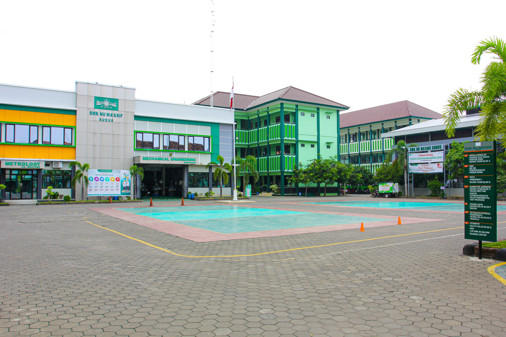

Tentang Kami
SMK NU Ma’arif Kudus adalah sekolah menengah kejuruan yang berada di bawah naungan LP Ma’arif NU.
Sejarah Sekolah
- Didirikan oleh LP Ma’arif NU
- Mencetak lulusan terampil
- Berkembang dengan berbagai jurusan
- Menjalin kerja sama industri
- Menjadi SMK unggulan
Visi & Misi
- Pendidikan berbasis Islam
- Berakhlak mulia
- Berwawasan global
Prestasi Sekolah
🏆 Juara 1 Antar Provinsi
🏆 Juara 2 Antar Kota
🏆 Juara 3 Nasional